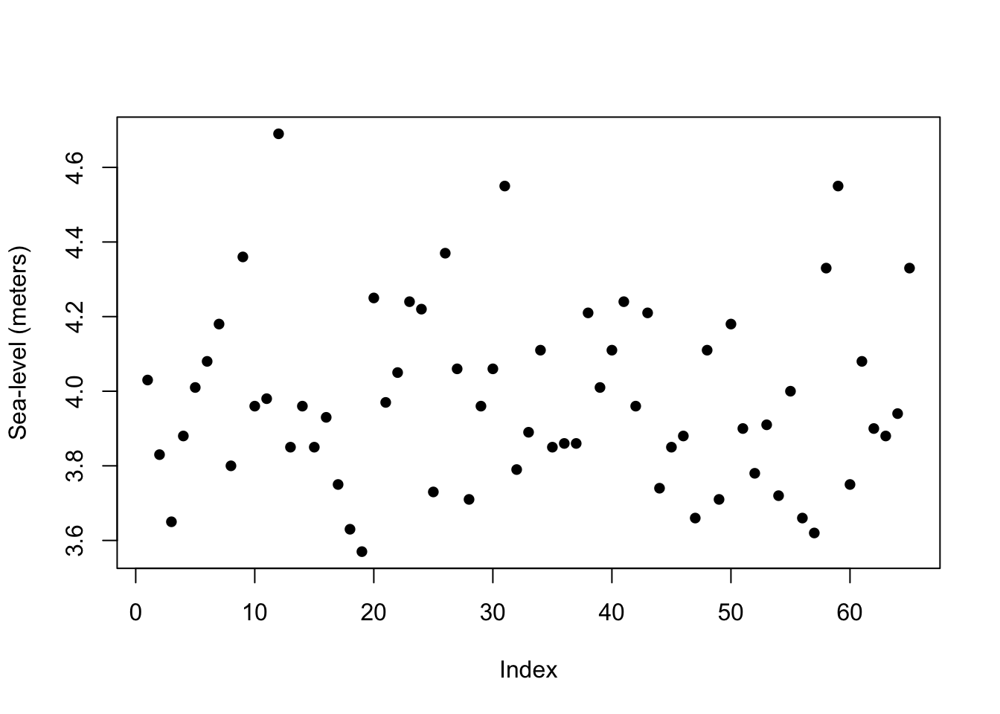
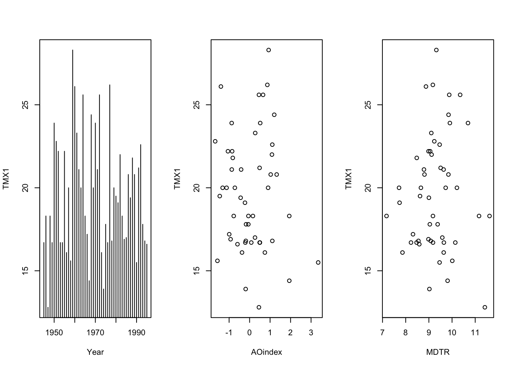

Chapter 47 극단값 통계학
통계학자 존 튜키(John Tukey)는 이렇게 말했다. “나는 모든 지구물리학자들이 실제 오차나 변동성의 분포들이 가우스(Gauss)나 라플라스(Laplace)가 만든 매끄러운 종 모양의 분포보다 훨씬 더 극단값 분포에 가까운 모양을 갖고 있음을 알고 있다고 확신한다.”
47.1 연 최대 해수면 높이 자료(annual maximum sea levels at Port Pirie, South Australia)
포트피리(Port Pirie)는 호주 남부 애들레이드(Adelaide) 북쪽에 있는 지역이다. 다음 그림은 1923년부터 1987년까지 포트피리의 연 최대 해수면 높이 자료를 그린 것이다. R 패키지의 portpirie에 자료가 들어있다.
data("portpirie")
plot(portpirie, pch=16, ylab="Sea-level (meters)")

Figure 47.1: Annual maximum sea levels at Port Pirie, South Australia.
47.2 코펜하겐 재보험 화재 손실액 자료(Danish reinsurance claim dataset)
다음 자료는 1980년부터 1990년까지 코펜하겐 재보험의 2167건 화재 손실액을 나타낸 자료이다. 이 자료는 R 패키지 CASdatasets에 danishuni라는 이름으로 저장되어 있다. (Charpentier 2015)
par(mfrow=c(1,3))
data("danishuni")
plot(danishuni, type = "l", xlab="Years", ylab="Loss amount")
danish.claim <- danishuni[,2]
years <- as.numeric(substr(danishuni[,1], 1, 4))
danish.max <- aggregate(danish.claim, by=list(years), max, na.rm=TRUE)
plot(danishuni, type = "l", xlab="Years", ylab="Annual maxima loss amount")
for(i in 1:dim(danish.max)[1]){
points(danishuni[which(as.numeric(substr(danishuni[,1], 1, 4))==danish.max[i,1]&danishuni$Loss==danish.max[i,2]), ], col="red", pch=15)
}
u <- 10
danish.exc <- danishuni[danishuni[,2] > u, 2]
plot(danishuni, type = "l", xlab="Years", ylab="Loss exceeance amount")
abline(h=10, col="red")
points(danishuni[which(danishuni$Loss>10),], col="red", pch=15)

Figure 47.2: Danish reinsurance claim data.
극단값 분석은 이런 극단적인 사건들을 모델링하고 적합한 위험 평가를 해 줄 수 있는 통계적 방법을 제공한다.
References
Charpentier, Arthur. 2015. Computational Actuarial Science with R. Chapman; Hall/CRC.